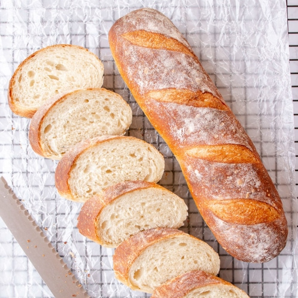
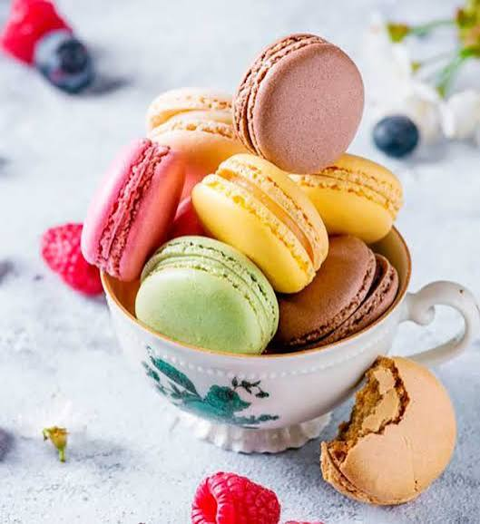

Disfrute de un panera con la seleccion mas exquisita de nuestros panes caseros
Disfrute de un panera con la seleccion mas exquisita de nuestros panes caseros

Deleitese con uno de nuestros productos estrellas y reconocidos regionalmente

Relajese tomando el mejor capuccino de toda la región occidental

El mejor baguette desde la misma Francia

Criossant como para deleitar a cualquier persona

Macarons capaces de incitar una revolución

Criminalmente deliciosos

Como para liberar las enegías despúes de un concierto de Taylor Swift y una ruptura